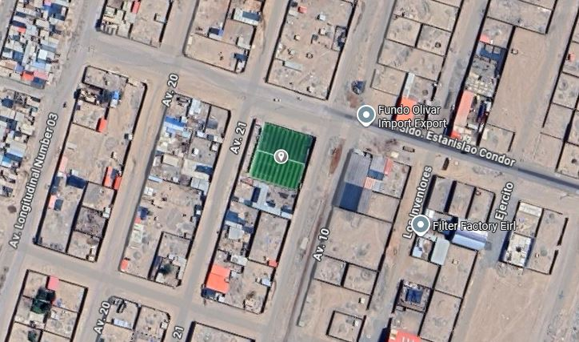

Bases del Campeonato
Las bases fueron fijadas por los delegados basándose en reglamentos de campeonatos oficiales.
Reglamento General
- En este campeonato, los partidos tendrán una duración de 40 minutos, divididos en dos tiempos de 20 minutos.
- Cada equipo deberá estar conformado por 7 jugadores en cancha (6 jugadores y 1 arquero).
- Se darán 5 minutos de tolerancia para que los equipos se presenten en la cancha. De lo contrario, el equipo perderá por W.O. (Walkover). La única forma de evitar el W.O. será presentando como mínimo 5 jugadores en cancha.
- Cada equipo tiene la obligación de llevar su propia pelota.
- Los únicos con derecho a reclamo serán el DELEGADO y el CAPITÁN del equipo.
- Los jugadores tendrán que ser descendientes del C.P. Santa Rosa de Huayllata. En caso de duda sobre un jugador, el reclamo se tendrá que realizar en mesa. Si el reclamo es confirmado, el equipo infractor perderá automáticamente el partido.
Sobre la Vestimenta
- Cada jugador deberá vestir el uniforme completo (camiseta y short) de su equipo con los mismos colores o diseño.
- En cuanto al calzado, deberá ser obligatoriamente ZAPATILLA DE FÚTBOL SALA (chutera) o ZAPATILLAS PARA GRASS SINTÉTICO. En caso de portar chimpunes con toperoles u otro tipo de calzado que pueda dañar el grass, el jugador no podrá ingresar a la cancha hasta que tenga el calzado adecuado.
- Es obligatorio el uso de CINTA para identificar al CAPITÁN. De lo contrario, el jugador será sancionado con una tarjeta amarilla.
Sobre el Arbitraje
El árbitro es la máxima autoridad en la cancha y tiene el poder absoluto de colocar tarjeta amarilla, roja o expulsar al jugador según corresponda.
- TARJETA AMARILLA: Esta sanción equivale a 3 minutos de suspensión fuera de la cancha. Dos tarjetas amarillas acumuladas en el mismo partido equivalen a una tarjeta roja.
- TARJETA ROJA: Esta sanción equivale a la expulsión del jugador por el resto del partido y le impide jugar el siguiente encuentro.
Sobre el Puntaje
Para este campeonato se ha establecido un puntaje estándar:
- PARTIDO GANADO (PG): Equivale a 3 puntos.
- PARTIDO EMPATADO (PE): Equivale a 1 punto.
- PARTIDO PERDIDO (PP): Equivale a 0 puntos.
Sobre la Premiación
La premiación se realizará al culminar la totalidad de los partidos. Estos son los premios que se entregarán:
- PRIMER PUESTO: Copa, Medallas, Camisetas y 4 Cajas de Cerveza.
- SEGUNDO PUESTO: Copa, Medallas, Camisetas y 3 Cajas de Cerveza.
- TERCER PUESTO: Copa, Camisetas y 2 Cajas de Cerveza.
- MEJOR ARQUERO: Copa para el arquero con menos goles recibidos.
- MEJOR GOLEADOR: Copa para el jugador con mayor cantidad de goles anotados.
A los equipos que ocupen del cuarto al noveno puesto se les entregará 1 Caja de Cerveza.
Fecha y Lugar
El lugar donde se realizará el campeonato será en la Cancha deportiva "GOLAZO", en los talleres del Parque Industrial de Viñani.
Las fechas del campeonato serán el Sábado 30 y el Domingo 31 de Agosto.
Ubicación del Campeonato

Ver en Google Maps y Cómo Llegar
Fotos de Referencia